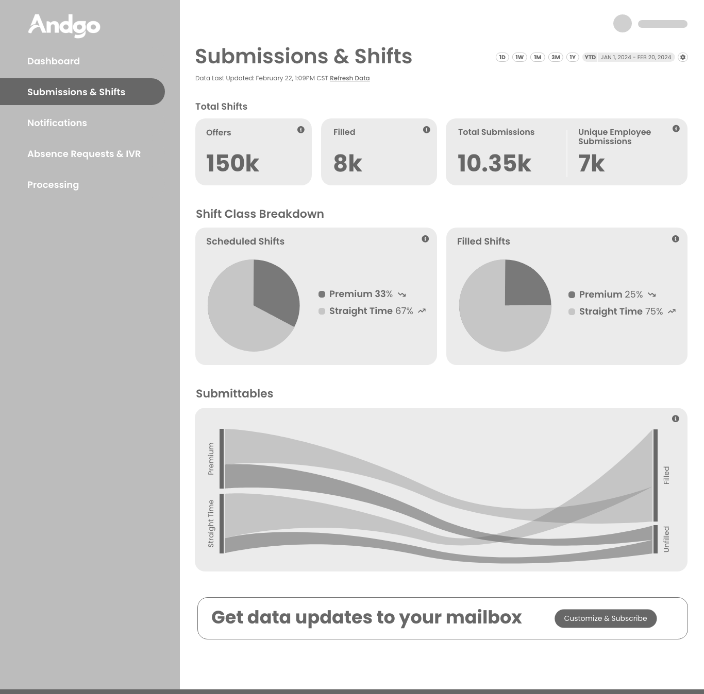
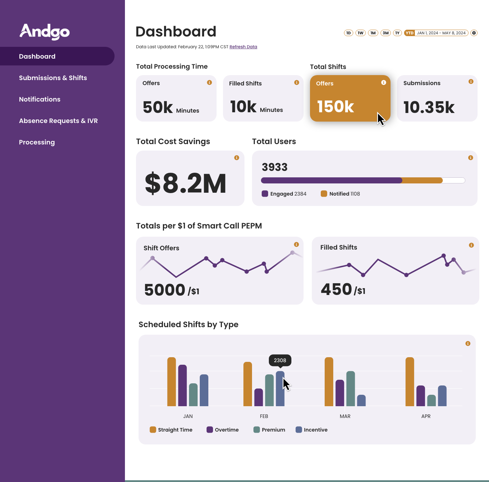
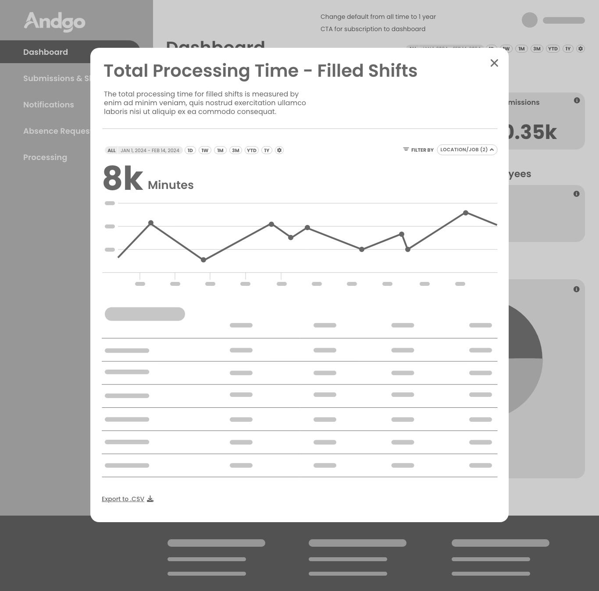
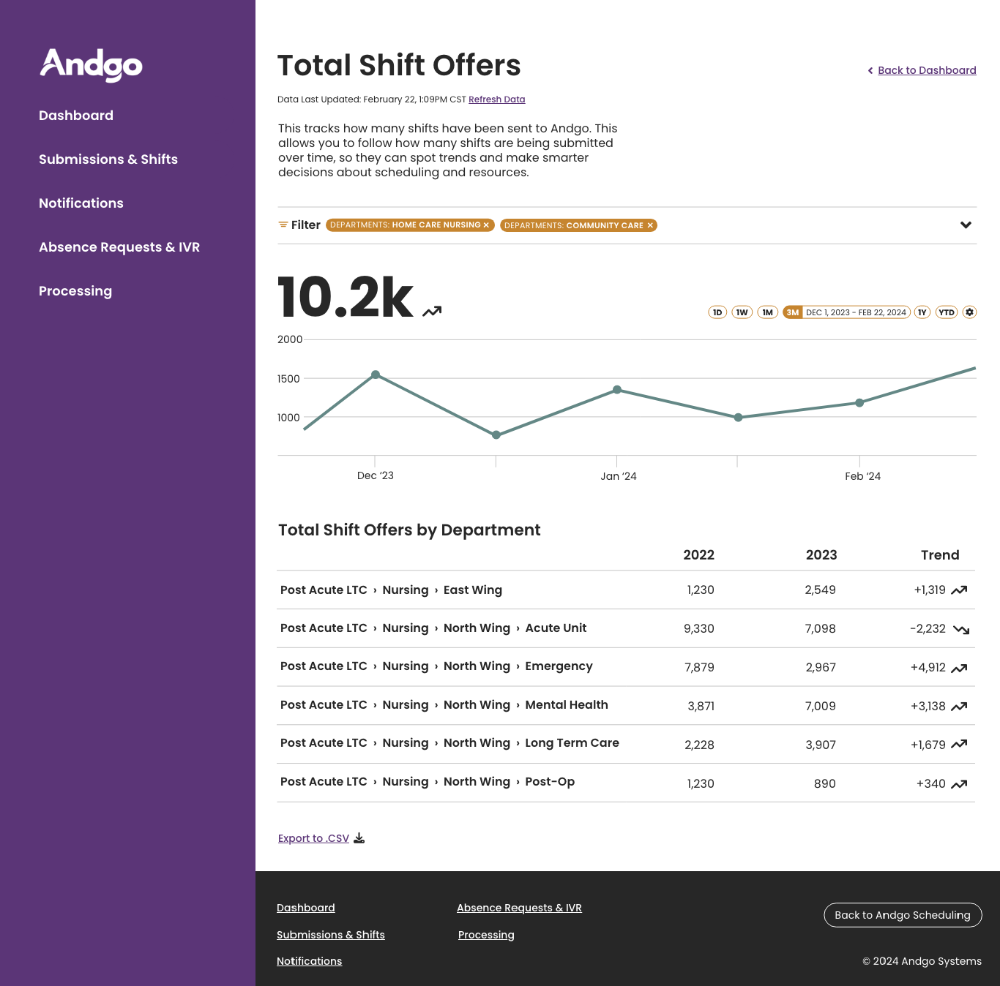
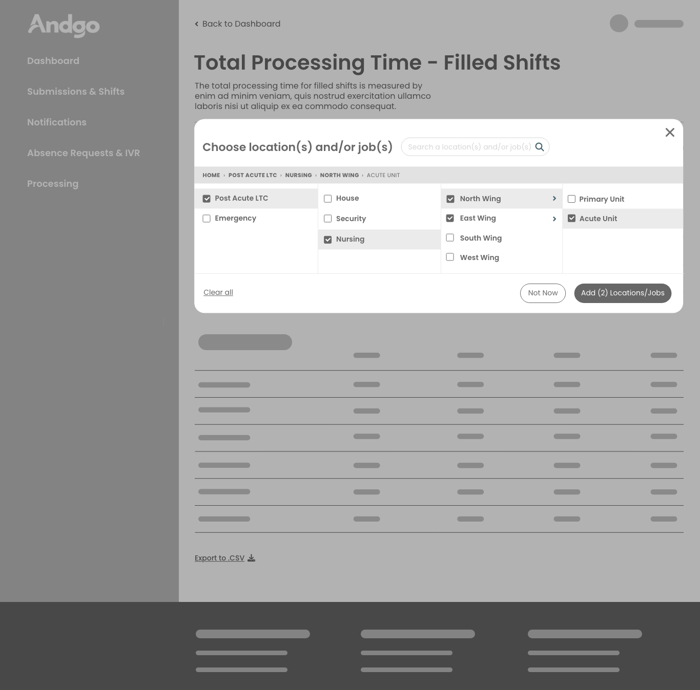
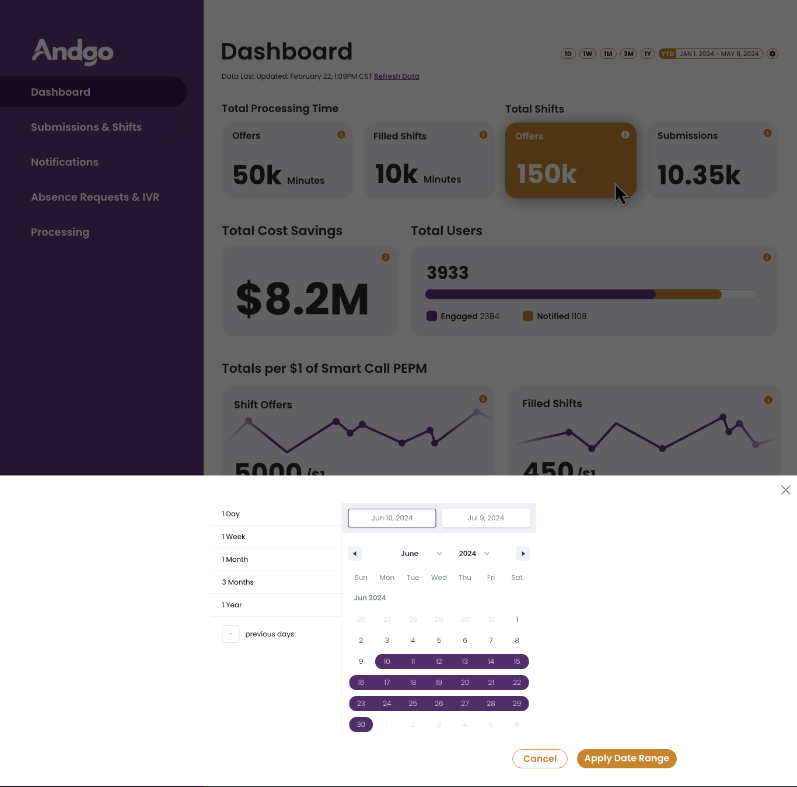

After years of manual reporting, Andgo recognized the need to empower customers to access their own data and metrics for internal reporting. Customers trusted that Andgo's core product the automation behind scenes worked, but they had no way to see it working. When a Site Admin wanted to know their fill rate last quarter, the honest answer was to ask Customer Success for a report, or export data and rebuild the picture by hand in a spreadsheet.
We knew building a customer data dashboard from the ground up would be what was best for them: a self-serve product, later named Shift Sight, that would let customers quickly gauge the ROI of Andgo, view a comprehensive overview of usage and adoption, and access the key metrics essential for reporting to senior leadership.
My approach began with direct customer consultations to understand their objectives, followed by an internal design-thinking workshop that I led with a product manager. That early listening surfaced two key personas: the Systems Analyst, who wanted reporting on demand and never wanted to be in the position of reporting numbers after the fact, and the Reporter a less technical but far higher frequency user who wanted to check the numbers themselves and share insights upward without a translation step.
After research, I studied the competitive landscape, built wireframes, validated concepts with customers, and moved into prototyping. During Early Access, I ran a lightweight diary study with engaged customers, logging real tasks and friction over time, paired with structured feedback sessions. To force the resulting tradeoffs into the open, I ran a joint scoring session with the full cross-functional team, scoring impact effort estimates against engineering's technical confidence and product's customer impact research.






As engineering began building, I took an early preview to a customer onsite visit to demo and gather feedback, the response was overwhelmingly positive, reinforcing our strategy and direction. Shift Sight shipped to General Availability on January 20, 2026, to roughly three dozen customers, converting a validated Preview into the default experience. It earned a Customer Effort Score of 4.4 out of 5 across it’s lifetime.